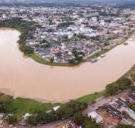

O Acre é um estado localizado na região Norte do Brasil, conhecido por sua floresta amazônica exuberante e biodiversidade rica. Sua economia é baseada principalmente na agropecuária, na exploração de recursos naturais e no extrativismo, como a seringueira. O estado também tem uma história importante relacionada à luta pela posse da Amazônia e à sua formação, sendo um símbolo de resistência e identidade regional. Além disso, o Acre possui uma cultura indígena forte, refletida em suas tradições, festas e na preservação de suas comunidades tradicionais.
